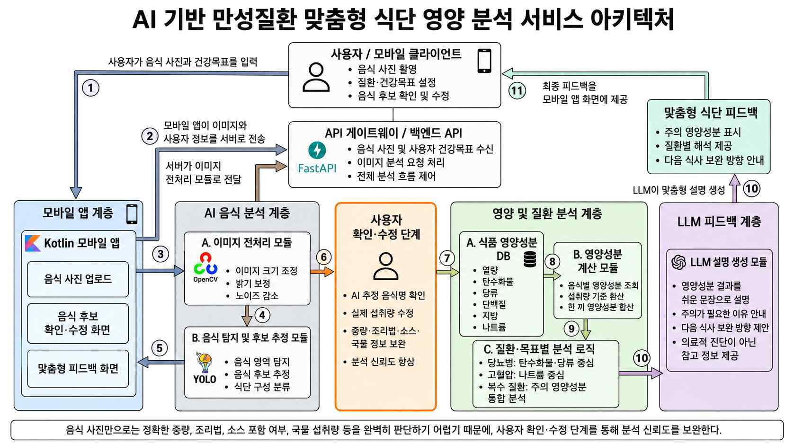

이 글은 2026년 6월 29일 기준으로 정리한 MEDICAL HACK 2026 제출 아이템의 중심내용이다. 핵심은 고혈압, 당뇨, 이상지질혈증처럼 식단 관리가 중요한 만성질환자가 매끼니를 더 쉽게 기록하고, 자신의 질환 상태에 맞는 영양 피드백을 받을 수 있게 하는 것이다.
부산대학교 메디컬 해커톤
디지털 헬스케어 MEDICAL HACK 2026은 헬스케어 제품과 서비스 아이디어를 비즈니스 모델 단계로 구체화하는 경진대회다. 예선에서는 아이디어 소개서를 바탕으로 기획의 문제의식과 실현 가능성을 평가하고, 본선에서는 비즈니스 모델 발표를 중심으로 아이디어의 확장성과 사업화 가능성을 검토한다.
이 대회는 단순히 기능 아이디어를 제출하는 데서 끝나지 않고, 멘토링을 통해 기술 구현 가능성, 보건의료적 타당성, 개인정보와 데이터 처리 방식까지 점검하며 아이디어를 실제 서비스 구조에 가깝게 다듬는 것을 목표로 한다. 우리가 제출한 아이템은 복합 만성질환자의 식단 기록 부담을 줄이고, 질환별 영양 기준을 통합해 일상에서 바로 이해할 수 있는 피드백을 제공하는 서비스다.
문제의식
고혈압, 당뇨, 이상지질혈증 등 두 가지 이상의 기저질환을 함께 가진 복합 대사증후군 환자는 계속 증가하고 있다. 이런 만성질환은 병원 안에서의 치료만큼이나 일상에서의 식이요법과 식단 관리가 중요하다.
하지만 기존 식단 관리 앱은 사용자가 먹은 음식 이름과 중량을 직접 기억하고 입력해야 하는 경우가 많다. 매끼니 음식명과 섭취량을 수동으로 기록하는 과정은 피로도가 높고, 장기적인 관리 지속을 어렵게 만든다.
서비스의 핵심 방향
이 서비스는 사용자가 식사 사진을 찍는 것에서 시작한다. 사진 기반 입력을 통해 식단 기록의 부담을 낮추고, 이후 음식 후보 추정, 사용자 확인, 영양성분 데이터베이스 매칭, 질환별 분석, LLM 기반 설명 제공으로 이어지는 흐름을 만든다.
특히 고혈압과 당뇨를 동시에 가진 사용자처럼 여러 식이 지침이 겹치는 경우를 고려한다. 당류 제한과 나트륨 제한이 서로 누락되거나 충돌하지 않도록, 복수 기저질환 정보를 바탕으로 통합된 식단 가이드를 제공하는 것이 차별점이다.
기술 흐름
사용자는 Kotlin 기반 모바일 앱에서 음식 사진을 촬영한다. 촬영된 이미지는 FastAPI 기반 백엔드 서버로 전송되고, 서버는 OpenCV를 활용해 이미지 크기, 밝기, 배경 요소를 정리한다. 사진마다 조명과 각도가 달라지기 때문에, 음식 인식 모델이 안정적으로 동작하려면 입력 품질을 맞추는 전처리 단계가 필요하다.
전처리된 이미지는 YOLO 계열 객체 탐지 모델과 음식 인식 모델을 거쳐 음식 영역과 음식 후보로 분리된다. 예를 들어 식판 사진이 들어오면 밥, 국, 김치, 반찬처럼 구성 요소를 나누고, 앱 화면에는 추정된 음식명과 섭취량 후보를 보여준다.
다만 음식 인식은 항상 완벽할 수 없기 때문에 사용자 확인 단계를 둔다. 사용자는 잘못 인식된 음식명을 고치거나, 섭취량을 “1인분”, “반공기”, “반찬 소량”처럼 실제 생활에 가까운 표현으로 조정할 수 있다.

영양 분석과 피드백
사용자가 확인한 음식명과 섭취량은 식품영양성분 데이터베이스와 매칭된다. 이를 통해 한 끼의 총열량, 탄수화물, 당류, 단백질, 지방, 나트륨 등을 계산한다. 밥 반공기, 김치 소량, 된장찌개 1인분처럼 입력된 식사 정보는 각각의 기준 영양성분과 연결된다.
마지막 단계에서는 LLM이 계산된 영양성분을 사용자가 이해하기 쉬운 문장으로 풀어준다. 예를 들어 고혈압 관리 사용자의 식사에서 나트륨 비중이 높다면, “이번 식사는 나트륨 비중이 높은 편이므로 다음 식사에서는 국물류나 짠 반찬을 줄이는 것이 좋다”처럼 행동으로 이어질 수 있는 피드백을 제공한다.
차별점
기존 디지털 헬스케어 앱은 단일 질환 중심의 수치 기록에 치우친 경우가 많다. 하지만 실제 대사증후군 환자 중에는 당뇨와 고혈압, 이상지질혈증을 동시에 관리해야 하는 사람이 많다.
단일 질환 중심 앱을 복합질환자가 사용할 경우, 당뇨 앱은 탄수화물과 당류를 중심으로 경고하고, 고혈압 앱은 나트륨을 중심으로 경고한다. 이때 사용자는 서로 다른 피드백 사이에서 혼란을 겪을 수 있다. 본 서비스는 복수 기저질환 정보를 함께 고려해 여러 질환의 영양 기준이 왜곡되지 않도록 통합 피드백을 제공하는 것을 목표로 한다.
사업화 방향
초기 대상은 당뇨병이나 고혈압처럼 식단 관리가 중요한 중장년층이다. 음식별 탄수화물, 당류, 나트륨을 매번 확인하기 어려운 사용자가 사진 촬영만으로 식단을 기록하고, 자신의 질환에 맞춰 주의해야 할 영양성분을 확인할 수 있도록 한다.
초기에는 개인 사용자를 대상으로 한 모바일 앱 기반 B2C 서비스로 시작한다. 음식 사진 기록, 열량 확인, 주요 영양성분 분석은 무료 기능으로 제공하고, 질환별 상세 피드백, 주간 식단 리포트, 보호자 공유 기능, 건강 목표별 맞춤 분석은 프리미엄 기능으로 확장할 수 있다.
장기적으로는 병원, 보건소, 약국, 건강검진센터와 연계한 B2B2C 모델도 검토할 수 있다. 사용자의 식단 기록을 주간 리포트로 정리하면 의료진이나 영양사가 상담할 때 실제 식습관을 파악하는 참고자료로 활용할 수 있다. 다만 이 서비스는 진단이나 치료를 대신하지 않고, 사용자의 식단 선택을 보조하는 건강관리 서비스로 운영한다.
6월 29일 기준 정리
6월 29일 기준으로 이 아이템은 “사진 기반 기록 부담 완화”와 “복합질환 맞춤 영양 피드백”을 중심축으로 정리되었다. 구현 관점에서는 모바일 앱, FastAPI 서버, OpenCV 전처리, 음식 인식 모델, 영양성분 DB, LLM 설명 생성이 하나의 파이프라인으로 연결되는 구조다.
이후 작업의 핵심은 실제 음식 인식 정확도, 사용자가 수정하기 쉬운 UI, 질환별 영양 기준의 안정성, 개인정보와 식사 기록을 다루는 보안 구조를 구체화하는 것이다.